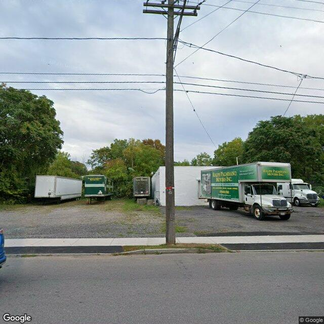

Property entry
628 Hiawatha Blvd E
Published 2026-06-07T23:02:54+00:00
Parcel key: 003-02-032

AI image read
The image shows a commercial lot containing a white single-story masonry building and several parked moving trucks and trailers.
Property type guess: commercial
Visible conditions
- Single-story white masonry commercial building visible in the background
- Several moving trucks and trailers parked on a gravel and asphalt lot
- Utility pole in the foreground partially obstructing the view of the building
Condition scores
- Porch Or Entry
- not_visible
- Roof
- not_visible
- Siding Or Facade
- fair
- Trash Debris
- none_visible
- Vegetation Overgrowth
- minor
- Windows Doors
- not_visible
- Yard Or Lot
- fair
Visible flags
- Active Construction Visible
- no
- Boarded Windows Or Doors
- no
- Fire Damage Visible
- no
- Structural Damage Visible
- no
- Vacancy Signs Visible
- no
Possible image-only flags
- No items reported.
AI review boxes
- No items reported.
Review reasons
- No items reported.
Image quality
- Available
- True
- Bytes
- 75134
- Needs Rerun
- False
['The building is partially obscured by parked trucks and a utility pole, and any residential units associated with the rental registry are not clearly visible from this angle.']
ACS tract context
Census Tract 2; Onondaga County; New York
- Housing units
- 1686
- Median gross rent
- 146700
- Median household income
- 51848
- Poverty rate
- 28.1
- Renter-occupied share
- 50.1
- Total population
- 3511
- Vacancy rate
- 14.7
OpenStreetMap nearby
60 meter search radius
Summary
- 13 mapped building footprints
- 3 land-use: industrial
- 1 land-use: residential
Notable mapped features
- landuse: industrialway #1189609078
- landuse: residentialway #1189771112
- landuse: industrialway #1189771113
- landuse: industrialway #1189771119
Vacant properties 0
No matching records found in this feed.
Rental registry 4
- Latitude
- 43.07671893
- Longitude
- -76.16153449
- NeedsRR
- Yes
- ObjectId
- 781
- PropertyAddress
- 620 Hiawatha Blvd E
- RR_app_received
- 1714089600000
- Latitude
- 43.0771506
- Longitude
- -76.16119746
- NeedsRR
- Yes
- ObjectId
- 784
- PropertyAddress
- 3129-31 Grant Blvd
- RR_app_received
- 1747872000000
- Latitude
- 43.07699339
- Longitude
- -76.16104827
- NeedsRR
- Yes
- ObjectId
- 786
- PropertyAddress
- 3125 Grant Blvd
- RR_app_received
- 1748304000000
- Latitude
- 43.07692955
- Longitude
- -76.160889
- NeedsRR
- Yes
- ObjectId
- 788
- PropertyAddress
- 3119 Grant Blvd
- RR_app_received
- 1654732800000
Code violations 0
No matching records found in this feed.
Unfit properties 0
No matching records found in this feed.